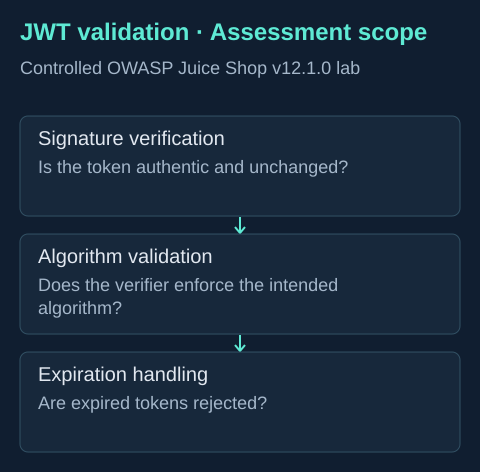

Application security · Controlled lab
JWT Validation Security Assessment
Examining the trust boundary behind an authentication token.

The question
What happens when an application accepts a token without validating its signature, expected algorithm or expiration? Each check protects a different part of the authentication boundary.
My contribution
I assessed these validation areas in OWASP Juice Shop v12.1.0 as part of the Vibecode security risk assessment, documenting authentication and access-control implications.
Technical approach
The assessment scope separates signature integrity, algorithm enforcement and token lifetime. A correctly formatted token is only input to the verifier; its contents should be trusted only after the required validation succeeds.
Evidence and limits
The diagram presents the assessment scope. It is not an exported report or proof of a specific exploit. The original report is not published here, so no vulnerability counts, severity scores or remediation outcomes are claimed.
What I learned
Authentication testing requires attention to the server’s verification behavior, beyond the token format or the presence of a login screen. This was a learning assessment of an intentionally vulnerable application.